X


Use this link to get 80%% off the Automate the Boring Stuff online video course.
Support me on Patreon
Just like how Python comes with several modules like random, math, or time that provide additional functions for your programs, the Pygame framework includes several modules with functions for drawing graphics, playing sounds, handling mouse input, and other things.
This chapter will cover the basic modules and functions that Pygame provides and assumes you already know basic Python programming. If you have trouble with some of the programming concepts, you can read through the “Invent Your Own Computer Games with Python” book online at http://invpy.com/book. This book is aimed at complete beginners to programming.
The “Invent with Python” book also has a few chapters covering Pygame. You can read them online at http://invpy.com/chap17.
Once you learn more about Pygame, you can view the other modules that Pygame provides from the online documentation at http://pygame.org/docs.
The Python programs that you can write with Python’s built-in functions only deal with text through the print() and input() functions. Your program can display text on the screen and let the user type in text from the keyboard. This type of program has a command line interface, or CLI (which is pronounced like the first part of “climb” and rhymes with “sky”). These programs are somewhat limited because they can’t display graphics, have colors, or use the mouse. These CLI programs only get input from the keyboard with the input() function and even then user must press Enter before the program can respond to the input. This means real-time (that is, continuing to run code without waiting for the user) action games are impossible to make.
Pygame provides functions for creating programs with a graphical user interface, or GUI (pronounced, “gooey”). Instead of a text-based CLI, programs with a graphics-based GUI can show a window with images and colors.
Our first program made with Pygame is a small program that makes a window that says “Hello World!” appear on the screen. Open a new file editor window by clicking on IDLE’s File menu, then New Window. Type in the following code into IDLE’s file editor and save it as blankpygame.py. Then run the program by pressing F5 or selecting Run > Run Module from the menu at the top of the file editor.
Remember, do not type the numbers or the periods at the beginning of each line (that’s just for reference in this book).
1. import pygame, sys
2. from pygame.locals import *
3.
4. pygame.init()
5. DISPLAYSURF = pygame.display.set_mode((400, 300))
6. pygame.display.set_caption('Hello World!')
7. while True: # main game loop
8. for event in pygame.event.get():
9. if event.type == QUIT:
10. pygame.quit()
11. sys.exit()
12. pygame.display.update()
When you run this program, a black window like this will appear:
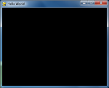
Yay! You’ve just made the world’s most boring video game! It’s just a blank window with “Hello World!” at the top of the window (in what is called the window’s title bar, which holds the caption text). But creating a window is the first step to making graphical games. When you click on the X button in the corner of the window, the program will end and the window will disappear.
Calling the print() function to make text appear in the window won’t work because print() is a function for CLI programs. The same goes for input() to get keyboard input from the user. Pygame uses other functions for input and output which are explained later in this chapter. For now, let’s look at each line in our “Hello World” program in more detail.
The first few lines of code in the Hello World program are lines that will begin almost every program you write that uses Pygame.
1. import pygame, sys
Line 1 is a simple import statement that imports the pygame and sys modules so that our program can use the functions in them. All of the Pygame functions dealing with graphics, sound, and other features that Pygame provides are in the pygame module.
Note that when you import the pygame module you automatically import all the modules that are in the pygame module as well, such as pygame.images and pygame.mixer.music. There’s no need to import these modules-inside-modules with additional import statements.
2. from pygame.locals import *
Line 2 is also an import statement. However, instead of the import modulename format, it uses the from modulename import * format. Normally if you want to call a function that is in a module, you must use the modulename.functionname() format after importing the module. However, with from modulename import *, you can skip the modulename. portion and simply use functionname() (just like Python’s built-in functions).
The reason we use this form of import statement for pygame.locals is because pygame.locals contains several constant variables that are easy to identify as being in the pygame.locals module without pygame.locals. in front of them. For all other modules, you generally want to use the regular import modulename format. (There is more information about why you want to do this at http://invpy.com/namespaces.)
4. pygame.init()
Line 4 is the pygame.init() function call, which always needs to be called after importing the pygame module and before calling any other Pygame function. You don’t need to know what this function does, you just need to know that it needs to be called first in order for many Pygame functions to work. If you ever see an error message like pygame.error: font not initialized, check to see if you forgot to call pygame.init() at the start of your program.
5. DISPLAYSURF = pygame.display.set_mode((400, 300))
Line 5 is a call to the pygame.display.set_mode() function, which returns the pygame.Surface object for the window. (Surface objects are described later in this chapter.) Notice that we pass a tuple value of two integers to the function: (400, 300). This tuple tells the set_mode() function how wide and how high to make the window in pixels. (400, 300) will make a window with a width of 400 pixels and height of 300 pixels.
Remember to pass a tuple of two integers to set_mode(), not just two integers themselves. The correct way to call the function is like this: pygame.display.set_mode((400, 300)). A function call like pygame.display.set_mode(400, 300) will cause an error that looks like this: TypeError: argument 1 must be 2-item sequence, not int.
The pygame.Surface object (we will just call them Surface objects for short) returned is stored in a variable named DISPLAYSURF.
6. pygame.display.set_caption('Hello World!')
Line 6 sets the caption text that will appear at the top of the window by calling the pygame.display.set_caption() function. The string value 'Hello World!' is passed in this function call to make that text appear as the caption:
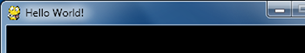
7. while True: # main game loop
8. for event in pygame.event.get():
Line 7 is a while loop that has a condition of simply the value True. This means that it never exits due to its condition evaluating to False. The only way the program execution will ever exit the loop is if a break statement is executed (which moves execution to the first line after the loop) or sys.exit() (which terminates the program). If a loop like this was inside a function, a return statement will also move execution out of the loop (as well as the function too).
The games in this book all have these while True loops in them along with a comment calling it the “main game loop”. A game loop (also called a main loop) is a loop where the code does three things:
1. Handles events.
2. Updates the game state.
3. Draws the game state to the screen.
The game state is simply a way of referring to a set of values for all the variables in a game program. In many games, the game state includes the values in the variables that tracks the player’s health and position, the health and position of any enemies, which marks have been made on a board, the score, or whose turn it is. Whenever something happens like the player taking damage (which lowers their health value), or an enemy moves somewhere, or something happens in the game world we say that the game state has changed.
If you’ve ever played a game that let you saved, the “save state” is the game state at the point that you’ve saved it. In most games, pausing the game will prevent the game state from changing.
Since the game state is usually updated in response to events (such as mouse clicks or keyboard presses) or the passage of time, the game loop is constantly checking and re-checking many times a second for any new events that have happened. Inside the main loop is code that looks at which events have been created (with Pygame, this is done by calling the pygame.event.get() function). The main loop also has code that updates the game state based on which events have been created. This is usually called event handling.
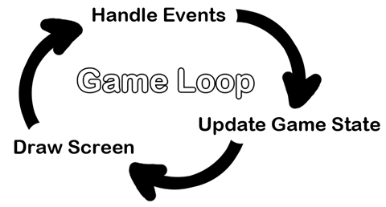
Any time the user does one of several actions (they are listed later in this chapter) such as pressing a keyboard key or moving the mouse on the program’s window, a pygame.event.Event object is created by the Pygame library to record this “event”. (This is a type of object called Event that exists in the event module, which itself is in the pygame module.) We can find out which events have happened by calling the pygame.event.get() function, which returns a list of pygame.event.Event objects (which we will just call Event objects for short).
The list of Event objects will be for each event that has happened since the last time the pygame.event.get() function was called. (Or, if pygame.event.get() has never been called, the events that have happened since the start of the program.)
7. while True: # main game loop
8. for event in pygame.event.get():
Line 8 is a for loop that will iterate over the list of Event objects that was returned by pygame.event.get(). On each iteration through the for loop, a variable named event will be assigned the value of the next event object in this list. The list of Event objects returned from pygame.event.get() will be in the order that the events happened. If the user clicked the mouse and then pressed a keyboard key, the Event object for the mouse click would be the first item in the list and the Event object for the keyboard press would be second. If no events have happened, then pygame.event.get() will return a blank list.
9. if event.type == QUIT:
10. pygame.quit()
11. sys.exit()
Event objects have a member variable (also called attributes or properties) named type which tells us what kind of event the object represents. Pygame has a constant variable for each of possible types in the pygame.locals modules. Line 9 checks if the Event object’s type is equal to the constant QUIT. Remember that since we used the from pygame.locals import * form of the import statement, we only have to type QUIT instead of pygame.locals.QUIT.
If the Event object is a quit event, then the pygame.quit() and sys.exit() functions are called. The pygame.quit() function is sort of the opposite of the pygame.init() function: it runs code that deactivates the Pygame library. Your programs should always call pygame.quit() before they call sys.exit() to terminate the program. Normally it doesn’t really matter since Python closes it when the program exits anyway. But there is a bug in IDLE that causes IDLE to hang if a Pygame program terminates before pygame.quit() is called.
Since we have no if statements that run code for other types of Event object, there is no event-handling code for when the user clicks the mouse, presses keyboard keys, or causes any other type of Event objects to be created. The user can do things to create these Event objects but it doesn’t change anything in the program because the program does not have any event-handling code for these types of Event objects. After the for loop on line 8 is done handling all the Event objects that have been returned by pygame.event.get(), the program execution continues to line 12.
12. pygame.display.update()
Line 12 calls the pygame.display.update() function, which draws the Surface object returned by pygame.display.set_mode() to the screen (remember we stored this object in the DISPLAYSURF variable). Since the Surface object hasn’t changed (for example, by some of the drawing functions that are explained later in this chapter), the same black image is redrawn to the screen each time pygame.display.update() is called.
That is the entire program. After line 12 is done, the infinite while loop starts again from the beginning. This program does nothing besides make a black window appear on the screen, constantly check for a QUIT event, and then redraws the unchanged black window to the screen over and over again. Let’s learn how to make interesting things appear on this window instead of just blackness by learning about pixels, Surface objects, Color objects, Rect objects, and the Pygame drawing functions.
The window that the “Hello World” program creates is just composed of little square dots on your screen called pixels. Each pixel starts off as black but can be set to a different color. Imagine that instead of a Surface object that is 400 pixels wide and 300 pixels tall, we just had a Surface object that was 8 pixels by 8 pixels. If that tiny 8x8 Surface was enlarged so that each pixel looks like a square in a grid, and we added numbers for the X and Y axis, then a good representation of it could look something like this:
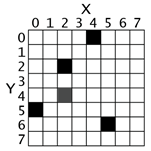
We can refer to a specific pixel by using a Cartesian Coordinate system. Each column of the X-axis and each row of the Y-axis will have an “address” that is an integer from 0 to 7 so that we can locate any pixel by specifying the X and Y axis integers.
For example, in the above 8x8 image, we can see that the pixels at the XY coordinates (4, 0), (2, 2), (0, 5), and (5, 6) have been painted black, the pixel at (2, 4) has been painted gray, while all the other pixels are painted white. XY coordinates are also called points. If you’ve taken a math class and learned about Cartesian Coordinates, you might notice that the Y-axis starts at 0 at the top and then increases going down, rather than increasing as it goes up. This is just how Cartesian Coordinates work in Pygame (and almost every programming language).
The Pygame framework often represents Cartesian Coordinates as a tuple of two integers, such as (4, 0) or (2, 2). The first integer is the X coordinate and the second is the Y coordinate. (Cartesian Coordinates are covered in more detail in chapter 12 of “Invent Your Own Computer Games with Python” at http://invpy.com/chap12)
Functions and methods are almost the same thing. They can both be called to execute the code in them. The difference between a function and a method is that a method will always be attached to an object. Usually methods change something about that particular object (you can think of the attached object as a sort of permanent argument passed to the method).
This is a function call of a function named foo():
foo()
This is a method call of a method also named foo(), which is attached to an object stored in a variable named duckie:
duckie.foo()
A call to a function inside of a module may look like a method call. To tell the difference, you need to look at the first name and see if it is the name of a module or the name of a variable that contains an object. You can tell that sys.exit() is a call to function inside of a module, because at the top of the program will be an import statement like import sys.
A constructor function is the same thing as a normal function call, except that its return value is a new object. Just by looking at source code, a function and constructor function look the same. Constructor functions (also called simply a “constructor” or sometimes “ctor” (“see-tor”) for short) are just a name given to functions that return a new object. But usually ctors start with a capital letter. This is why when you write your own programs, your function names should only begin with a lowercase letter.
For example, pygame.Rect() and pygame.Surface() are both constructor functions inside the pygame module that return new Rect and Surface objects. (These objects are described later.)
Here’s an example of a function call, a method call, and a call to a function inside a module:
import whammy
fizzy()
egg = Wombat()
egg.bluhbluh()
whammy.spam()
Even though these names are all made up, you can tell which is a function call, a method call, and a call to a function inside a method. The name whammy refers to a module, since you can see it is being imported on the first line. The fizzy name has nothing before it and parentheses after it, so you know it is a function call.
Wombat() is also a function call, in this case it is a constructor function that returns an object. (The capital letter that it starts with isn’t a guarantee that it’s a constructor function rather than a regular function, but it is a safe bet.) The object is stored in a variable named egg. The egg.bluhbluh() call is a method call, which you can tell because bluhbluh is attached to a variable with an object in it.
Meanwhile, whammy.spam() is a function call, not a method call. You can tell it is not a method because the name whammy was imported as a module earlier.
Surface objects are objects that represent a rectangular 2D image. The pixels of the Surface object can be changed by calling the Pygame drawing functions (described later in this chapter) and then displayed on the screen. The window border, title bar, and buttons are not part of the display Surface object.
In particular, the Surface object returned by pygame.display.set_mode() is called the display Surface. Anything that is drawn on the display Surface object will be displayed on the window when the pygame.display.update() function is called. It is a lot faster to draw on a Surface object (which only exists in the computer’s memory) than it is to draw a Surface object to the computer screen. Computer memory is much faster to change than pixels on a monitor.
Often your program will draw several different things to a Surface object. Once you are done drawing everything on the display Surface object for this iteration of the game loop (called a frame, just like a still image on a paused DVD is called) on a Surface object, it can be drawn to the screen. The computer can draw frames very quickly, and our programs will often run around 30 frames per second (that is, 30 FPS). This is called the “frame rate” and is explained later in this chapter.
Drawing on Surface objects will be covered in the “Primitive Drawing Functions” and “Drawing Images” sections later this chapter.
There are three primary colors of light: red, green and blue. (Red, blue, and yellow are the primary colors for paints and pigments, but the computer monitor uses light, not paint.) By combining different amounts of these three colors you can form any other color. In Pygame, we represent colors with tuples of three integers. The first value in the tuple is how much red is in the color. An integer value of 0 means there is no red in this color, and a value of 255 means there is the maximum amount of red in the color. The second value is for green and the third value is for blue. These tuples of three integers used to represent a color are often called RGB values.
Because you can use any combination of 0 to 255 for each of the three primary colors, this means Pygame can draw 16,777,216 different colors (that is, 256 x 256 x 256 colors). However, if try to use a number larger than 255 or a negative number, you will get an error that looks like “ValueError: invalid color argument”.
For example, we will create the tuple (0, 0, 0) and store it in a variable named BLACK. With no amount of red, green, or blue, the resulting color is completely black. The color black is the absence of any color. The tuple (255, 255, 255) for a maximum amount of red, green, and blue to result in white. The color white is the full combination of red, green, and blue. The tuple (255, 0, 0) represents the maximum amount of red but no amount of green and blue, so the resulting color is red. Similarly, (0, 255, 0) is green and (0, 0, 255) is blue.
You can mix the amount of red, green, and blue to form other colors. Here are the RGB values for a few common colors:
|
Color |
RGB Values |
|
Aqua |
( 0, 255, 255) |
|
Black |
( 0, 0, 0) |
|
Blue |
( 0, 0, 255) |
|
Fuchsia |
(255, 0, 255) |
|
Gray |
(128, 128, 128) |
|
Green |
( 0, 128, 0) |
|
Lime |
( 0, 255, 0) |
|
Maroon |
(128, 0, 0) |
|
Navy Blue |
( 0, 0, 128) |
|
Olive |
(128, 128, 0) |
|
Purple |
(128, 0, 128) |
|
Red |
(255, 0, 0) |
|
Silver |
(192, 192, 192) |
|
Teal |
( 0, 128, 128) |
|
White |
(255, 255, 255) |
|
Yellow |
(255, 255, 0) |
When you look through a glass window that has a deep red tint, all of the colors behind it have a red shade added to them. You can mimic this effect by adding a fourth 0 to 255 integer value to your color values.
This value is known as the alpha value. It is a measure of how opaque (that is, not transparent) a color is. Normally when you draw a pixel onto a surface object, the new color completely replaces whatever color was already there. But with colors that have an alpha value, you can instead just add a colored tint to the color that is already there.
For example, this tuple of three integers is for the color green: (0, 255, 0). But if we add a fourth integer for the alpha value, we can make this a half transparent green color: (0, 255, 0, 128). An alpha value of 255 is completely opaque (that is, not transparency at all). The colors (0, 255, 0) and (0, 255, 0, 255) look exactly the same. An alpha value of 0 means the color is completely transparent. If you draw any color that has an alpha value of 0 to a surface object, it will have no effect, because this color is completely transparent and invisible.
In order to draw using transparent colors, you must create a Surface object with the convert_alpha() method. For example, the following code creates a Surface object that transparent colors can be drawn on:
anotherSurface = DISPLAYSURF.convert_alpha()
Once things have been drawn on the Surface object stored in anotherSurface, then anotherSurface can be “blitted” (that is, copied) to DISPLAYSURF so it will appear on the screen. (See the “Drawing Images with pygame.image.load() and blit()” section later in this chapter.)
It’s important to note that you cannot use transparent colors on Surface objects not returned from a convert_alpha() call, including the display Surface that was returned from pygame.display.set_mode().
If we were to create a color tuple to draw the legendary Invisible Pink Unicorn, we would use (255, 192, 192, 0), which ends up looking completely invisible just like any other color that has a 0 for its alpha value. It is, after all, invisible.
(Above is a screenshot of a drawing of the Invisible Pink Unicorn.)
You need to know how to represent a color because Pygame’s drawing functions need a way to know what color you want to draw with. A tuple of three or four integers is one way. Another way is as a pygame.Color object. You can create Color objects by calling the pygame.Color() constructor function and passing either three or four integers. You can store this Color object in variables just like you can store tuples in variables. Try typing the following into the interactive shell:
>>> import pygame
>>> pygame.Color(255, 0, 0)
(255, 0, 0, 255)
>>> myColor = pygame.Color(255, 0, 0, 128)
>>> myColor == (255, 0, 0, 128)
True
>>>
Any drawing function in Pygame (which we will learn about in a bit) that has a parameter for color can have either the tuple form or Color object form of a color passed for it. Even though they are different data types, a Color object is equal to a tuple of four integers if they both represent the same color (just like how 42 == 42.0 will evaluate to True).
Now that you know how to represent colors (as a pygame.Color object or a tuple of three or four integers for red, green, blue, and optionally alpha) and coordinates (as a tuple of two integers for X and Y), let’s learn about pygame.Rect objects so we can start using Pygame’s drawing functions.
Pygame has two ways to represent rectangular areas (just like there are two ways to represent colors). The first is a tuple of four integers:
1. The X coordinate of the top left corner.
2. The Y coordinate of the top left corner.
3. The width (in pixels) of the rectangle.
4. Then height (in pixels) of the rectangle.
The second way is as a pygame.Rect object, which we will call Rect objects for short. For example, the code below creates a Rect object with a top left corner at (10, 20) that is 200 pixels wide and 300 pixels tall:
>>> import pygame
>>> spamRect = pygame.Rect(10, 20, 200, 300)
>>> spamRect == (10, 20, 200, 300)
True
The handy thing about this is that the Rect object automatically calculates the coordinates for other features of the rectangle. For example, if you need to know the X coordinate of the right edge of the pygame.Rect object we stored in the spamRect variable, you can just access the Rect object’s right attribute:
>>> spamRect.right
210
The Pygame code for the Rect object automatically calculated that if the left edge is at the X coordinate 10 and the rectangle is 200 pixels wide, then the right edge must be at the X coordinate 210. If you reassign the right attribute, all the other attributes are automatically recalculated:
>>> spamRect.right = 350
>>> spamRect.left
150
Here’s a list of all the attributes that pygame.Rect objects provide (in our example, the variable where the Rect object is stored in a variable named spamRect):
|
Attribute Name |
Description |
|
myRect.left |
The int value of the X-coordinate of the left side of the rectangle. |
|
myRect.right |
The int value of the X-coordinate of the right side of the rectangle. |
|
myRect.top |
The int value of the Y-coordinate of the top side of the rectangle. |
|
myRect.bottom |
The int value of the Y-coordinate of the bottom side. |
|
myRect.centerx |
The int value of the X-coordinate of the center of the rectangle. |
|
myRect.centery |
The int value of the Y-coordinate of the center of the rectangle. |
|
myRect.width |
The int value of the width of the rectangle. |
|
myRect.height |
The int value of the height of the rectangle. |
|
myRect.size |
A tuple of two ints: (width, height) |
|
myRect.topleft |
A tuple of two ints: (left, top) |
|
myRect.topright |
A tuple of two ints: (right, top) |
|
myRect.bottomleft |
A tuple of two ints: (left, bottom) |
|
myRect.bottomright |
A tuple of two ints: (right, bottom) |
|
myRect.midleft |
A tuple of two ints: (left, centery) |
|
myRect.midright |
A tuple of two ints: (right, centery) |
|
myRect.midtop |
A tuple of two ints: (centerx, top) |
|
myRect.midbottom |
A tuple of two ints: (centerx, bottom) |
Pygame provides several different functions for drawing different shapes onto a surface object. These shapes such as rectangles, circles, ellipses, lines, or individual pixels are often called drawing primitives. Open IDLE’s file editor and type in the following program, and save it as drawing.py.
1. import pygame, sys
2. from pygame.locals import *
3.
4. pygame.init()
5.
6. # set up the window
7. DISPLAYSURF = pygame.display.set_mode((500, 400), 0, 32)
8. pygame.display.set_caption('Drawing')
9.
10. # set up the colors
11. BLACK = ( 0, 0, 0)
12. WHITE = (255, 255, 255)
13. RED = (255, 0, 0)
14. GREEN = ( 0, 255, 0)
15. BLUE = ( 0, 0, 255)
16.
17. # draw on the surface object
19. pygame.draw.polygon(DISPLAYSURF, GREEN, ((146, 0), (291, 106), (236, 277), (56, 277), (0, 106)))
20. pygame.draw.line(DISPLAYSURF, BLUE, (60, 60), (120, 60), 4)
21. pygame.draw.line(DISPLAYSURF, BLUE, (120, 60), (60, 120))
22. pygame.draw.line(DISPLAYSURF, BLUE, (60, 120), (120, 120), 4)
23. pygame.draw.circle(DISPLAYSURF, BLUE, (300, 50), 20, 0)
24. pygame.draw.ellipse(DISPLAYSURF, RED, (300, 250, 40, 80), 1)
25. pygame.draw.rect(DISPLAYSURF, RED, (200, 150, 100, 50))
26.
27. pixObj = pygame.PixelArray(DISPLAYSURF)
28. pixObj[480][380] = BLACK
29. pixObj[482][382] = BLACK
30. pixObj[484][384] = BLACK
31. pixObj[486][386] = BLACK
32. pixObj[488][388] = BLACK
33. del pixObj
34.
35. # run the game loop
36. while True:
37. for event in pygame.event.get():
38. if event.type == QUIT:
39. pygame.quit()
40. sys.exit()
41. pygame.display.update()
When this program is run, the following window is displayed until the user closes the window:
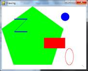
Notice how we make constant variables for each of the colors. Doing this makes our code more readable, because seeing GREEN in the source code is much easier to understand as representing the color green than (0, 255, 0) is.
The drawing functions are named after the shapes they draw. The parameters you pass these functions tell them which Surface object to draw on, where to draw the shape (and what size), in what color, and how wide to make the lines. You can see how these functions are called in the drawing.py program, but here is a short description of each function:
· fill(color) – The fill() method is not a function but a method of pygame.Surface objects. It will completely fill in the entire Surface object with whatever color value you pass as for the color parameter.
· pygame.draw.polygon(surface, color, pointlist, width) – A polygon is shape made up of only flat sides. The surface and color parameters tell the function on what surface to draw the polygon, and what color to make it.
The pointlist parameter is a tuple or list of points (that is, tuple or list of two-integer tuples for XY coordinates). The polygon is drawn by drawing lines between each point and the point that comes after it in the tuple. Then a line is drawn from the last point to the first point. You can also pass a list of points instead of a tuple of points.
The width parameter is optional. If you leave it out, the polygon that is drawn will be filled in, just like our green polygon on the screen is filled in with color. If you do pass an integer value for the width parameter, only the outline of the polygon will be drawn. The integer represents how many pixels width the polygon’s outline will be. Passing 1 for the width parameter will make a skinny polygon, while passing 4 or 10 or 20 will make thicker polygons. If you pass the integer 0 for the width parameter, the polygon will be filled in (just like if you left the width parameter out entirely).
All of the pygame.draw drawing functions have optional width parameters at the end, and they work the same way as pygame.draw.polygon()’s width parameter. Probably a better name for the width parameter would have been thickness, since that parameter controls how thick the lines you draw are.
· pygame.draw.line(surface, color, start_point, end_point, width) – This function draws a line between the start_point and end_point parameters.
· pygame.draw.lines(surface, color, closed, pointlist, width) – This function draws a series of lines from one point to the next, much like pygame.draw.polygon(). The only difference is that if you pass False for the closed parameter, there will not be a line from the last point in the pointlist parameter to the first point. If you pass True, then it will draw a line from the last point to the first.
· pygame.draw.circle(surface, color, center_point, radius, width) – This function draws a circle. The center of the circle is at the center_point parameter. The integer passed for the radius parameter sets the size of the circle.
The radius of a circle is the distance from the center to the edge. (The radius of a circle is always half of the diameter.) Passing 20 for the radius parameter will draw a circle that has a radius of 20 pixels.
· pygame.draw.ellipse(surface, color, bounding_rectangle, width) – This function draws an ellipse (which is like a squashed or stretched circle). This function has all the usual parameters, but in order to tell the function how large and where to draw the ellipse, you must specify the bounding rectangle of the ellipse. A bounding rectangle is the smallest rectangle that can be drawn around a shape. Here’s an example of an ellipse and its bounding rectangle:
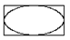
The bounding_rectangle parameter can be a pygame.Rect object or a tuple of four integers. Note that you do not specify the center point for the ellipse like you do for the pygame.draw.circle() function.
· pygame.draw.rect(surface, color, rectangle_tuple, width) – This function draws a rectangle. The rectangle_tuple is either a tuple of four integers (for the XY coordinates of the top left corner, and the width and height) or a pygame.Rect object can be passed instead. If the rectangle_tuple has the same size for the width and height, a square will be drawn.
Unfortunately, there isn’t a single function you can call that will set a single pixel to a color (unless you call pygame.draw.line() with the same start and end point). The Pygame framework needs to run some code behind the scenes before and after drawing to a Surface object. If it had to do this for every single pixel you wanted to set, your program would run much slower. (By my quick testing, drawing pixels this way is two or three times slower.)
Instead, you should create a pygame.PixelArray object (we’ll call them PixelArray objects for short) of a Surface object and then set individual pixels. Creating a PixelArray object of a Surface object will “lock” the Surface object. While a Surface object is locked, the drawing functions can still be called on it, but it cannot have images like PNG or JPG images drawn on it with the blit() method. (The blit() method is explained later in this chapter.)
If you want to see if a Surface object is locked, the get_locked() Surface method will return True if it is locked and False if it is not.
The PixelArray object that is returned from pygame.PixelArray() can have individual pixels set by accessing them with two indexes. For example, line 28’s pixObj[480][380] = BLACK will set the pixel at X coordinate 480 and Y coordinate 380 to be black (remember that the BLACK variable stores the color tuple (0, 0, 0)).
To tell Pygame that you are finished drawing individual pixels, delete the PixelArray object with a del statement. This is what line 33 does. Deleting the PixelArray object will “unlock” the Surface object so that you can once again draw images on it. If you forget to delete the PixelArray object, the next time you try to blit (that is, draw) an image to the Surface the program will raise an error that says, “pygame.error: Surfaces must not be locked during blit”.
After you are done calling the drawing functions to make the display Surface object look the way you want, you must call pygame.display.update() to make the display Surface actually appear on the user’s monitor.
The one thing that you must remember is that pygame.display.update() will only make the display Surface (that is, the Surface object that was returned from the call to pygame.display.set_mode()) appear on the screen. If you want the images on other Surface objects to appear on the screen, you must “blit” them (that is, copy them) to the display Surface object with the blit() method (which is explained next in the “Drawing Images” section).
Now that we know how to get the Pygame framework to draw to the screen, let’s learn how to make animated pictures. A game with only still, unmoving images would be fairly dull. (Sales of my game “Look At This Rock” have been disappointing.) Animated images are the result of drawing an image on the screen, then a split second later drawing a slightly different image on the screen. Imagine the program’s window was 6 pixels wide and 1 pixel tall, with all the pixels white except for a black pixel at 4, 0. It would look like this:
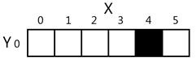
If you changed the window so that 3, 0 was black and 4,0 was white, it would look like this:
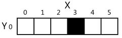
To the user, it looks like the black pixel has “moved” over to the left. If you redrew the window to have the black pixel at 2, 0, it would continue to look like the black pixel is moving left:
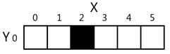
It may look like the black pixel is moving, but this is just an illusion. To the computer, it is just showing three different images that each just happen to have one black pixel. Consider if the three following images were rapidly shown on the screen:
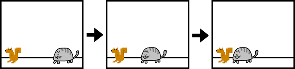
To the user, it would look like the cat is moving towards the squirrel. But to the computer, they’re just a bunch of pixels. The trick to making believable looking animation is to have your program draw a picture to the window, wait a fraction of a second, and then draw a slightly different picture.
Here is an example program demonstrating a simple animation. Type this code into IDLE’s file editor and save it as catanimation.py. It will also require the image file cat.png to be in the same folder as the catanimation.py file. You can download this image from http://invpy.com/cat.png. This code is available at http://invpy.com/catanimation.py.
1. import pygame, sys
2. from pygame.locals import *
3.
4. pygame.init()
5.
6. FPS = 30 # frames per second setting
7. fpsClock = pygame.time.Clock()
8.
9. # set up the window
10. DISPLAYSURF = pygame.display.set_mode((400, 300), 0, 32)
11. pygame.display.set_caption('Animation')
12.
13. WHITE = (255, 255, 255)
14. catImg = pygame.image.load('cat.png')
15. catx = 10
16. caty = 10
17. direction = 'right'
18.
19. while True: # the main game loop
20. DISPLAYSURF.fill(WHITE)
21.
22. if direction == 'right':
23. catx += 5
24. if catx == 280:
25. direction = 'down'
26. elif direction == 'down':
27. caty += 5
28. if caty == 220:
29. direction = 'left'
30. elif direction == 'left':
31. catx -= 5
32. if catx == 10:
33. direction = 'up'
34. elif direction == 'up':
35. caty -= 5
36. if caty == 10:
37. direction = 'right'
38.
39. DISPLAYSURF.blit(catImg, (catx, caty))
40.
41. for event in pygame.event.get():
42. if event.type == QUIT:
43. pygame.quit()
44. sys.exit()
45.
46. pygame.display.update()
47. fpsClock.tick(FPS)
Look at that animated cat go! This program will be much more of a commercial success than my game, “Look At This Rock 2: A Different Rock”.
The frame rate or refresh rate is the number of pictures that the program draws per second, and is measured in FPS or frames per second. (On computer monitors, the common name for FPS is hertz. Many monitors have a frame rate of 60 hertz, or 60 frames per second.) A low frame rate in video games can make the game look choppy or jumpy. If the program has too much code to run to draw to the screen frequently enough, then the FPS goes down. But the games in this book are simple enough that this won’t be issue even on old computers.
A pygame.time.Clock object can help us make sure our program runs at a certain maximum FPS. This Clock object will ensure that our game programs don’t run too fast by putting in small pauses on each iteration of the game loop. If we didn’t have these pauses, our game program would run as fast as the computer could run it. This is often too fast for the player, and as computers get faster they would run the game faster too. A call to the tick() method of a Clock object in the game loop can make sure the game runs at the same speed no matter how fast of a computer it runs on. The Clock object is created on line 7 of the catanimation.py program.
7. fpsClock = pygame.time.Clock()
The Clock object’s tick() method should be called at the very end of the game loop, after the call to pygame.display.update(). The length of the pause is calculated based on how long it has been since the previous call to tick(), which would have taken place at the end of the previous iteration of the game loop. (The first time the tick() method is called, it doesn’t pause at all.) In the animation program, is it run on line 47 as the last instruction in the game loop.
All you need to know is that you should call the tick() method once per iteration through the game loop at the end of the loop. Usually this is right after the call to pygame.display.update().
47. fpsClock.tick(FPS)
Try modifying the FPS constant variable to run the same program at different frame rates. Setting it to a lower value would make the program run slower. Setting it to a higher value would make the program run faster.
The drawing functions are fine if you want to draw simple shapes on the screen, but many games have images (also called sprites). Pygame is able to load images onto Surface objects from PNG, JPG, GIF, and BMP image files. The differences between these image file formats is described at http://invpy.com/formats.
The image of the cat was stored in a file named cat.png. To load this file’s image, the string 'cat.png' is passed to the pygame.image.load() function. The pygame.image.load() function call will return a Surface object that has the image drawn on it. This Surface object will be a separate Surface object from the display Surface object, so we must blit (that is, copy) the image’s Surface object to the display Surface object. Blitting is drawing the contents of one Surface onto another. It is done with the blit() Surface object method.
If you get an error message like “pygame.error: Couldn't open cat.png” when calling pygame.image.load(), then make sure the cat.png file is in the same folder as the catanimation.py file before you run the program.
39. DISPLAYSURF.blit(catImg, (catx, caty))
Line 39 of the animation program uses the blit() method to copy catImg to DISPLAYSURF. There are two parameters for blit(). The first is the source Surface object, which is what will be copied onto the DISPLAYSURF Surface object. The second parameter is a two-integer tuple for the X and Y values of the topleft corner where the image should be blitted to.
If catx and caty were set to 100 and 200 and the width of catImg was 125 and the height was 79, this blit() call would copy this image onto DISPLAYSURF so that the top left corner of the catImg was at the XY coordinate (100, 200) and the bottom right corner’s XY coordinate was at (225, 279).
Note that you cannot blit to a Surface that is currently “locked” (such as when a PixelArray object has been made from it and not yet been deleted.)
The rest of the game loop is just changing the catx, caty, and direction variables so that the cat moves around the window. There is also a call to pygame.event.get() to handle the QUIT event.
If you want to draw text to the screen, you could write several calls to pygame.draw.line() to draw out the lines of each letter. This would be a headache to type out all those pygame.draw.line() calls and figure out all the XY coordinates, and probably wouldn’t look very good.
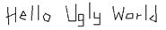
The above message would take forty one calls to the pygame.draw.line() function to make. Instead, Pygame provides some much simpler functions for fonts and creating text. Here is a small Hello World program using Pygame’s font functions. Type it into IDLE’s file editor and save it as fonttext.py:
1. import pygame, sys
2. from pygame.locals import *
3.
4. pygame.init()
5. DISPLAYSURF = pygame.display.set_mode((400, 300))
6. pygame.display.set_caption('Hello World!')
7.
8. WHITE = (255, 255, 255)
9. GREEN = (0, 255, 0)
10. BLUE = (0, 0, 128)
11.
12. fontObj = pygame.font.Font('freesansbold.ttf', 32)
13. textSurfaceObj = fontObj.render('Hello world!', True, GREEN, BLUE)
14. textRectObj = textSurfaceObj.get_rect()
15. textRectObj.center = (200, 150)
16.
17. while True: # main game loop
18. DISPLAYSURF.fill(WHITE)
19. DISPLAYSURF.blit(textSurfaceObj, textRectObj)
20. for event in pygame.event.get():
21. if event.type == QUIT:
22. pygame.quit()
23. sys.exit()
24. pygame.display.update()
There are six steps to making text appear on the screen:
1. Create a pygame.font.Font object. (Like on line 12)
2. Create a Surface object with the text drawn on it by calling the Font object’s render() method. (Line 13)
3. Create a Rect object from the Surface object by calling the Surface object’s get_rect() method. (Line 14) This Rect object will have the width and height correctly set for the text that was rendered, but the top and left attributes will be 0.
4. Set the position of the Rect object by changing one of its attributes. On line 15, we set the center of the Rect object to be at 200, 150.
5. Blit the Surface object with the text onto the Surface object returned by pygame.display.set_mode(). (Line 19)
6. Call pygame.display.update() to make the display Surface appear on the screen. (Line 24)
The parameters to the pygame.font.Font() constructor function is a string of the font file to use, and an integer of the size of the font (in points, like how word processors measure font size). On line 12, we pass 'freesansbold.ttf' (this is a font that comes with Pygame) and the integer 32 (for a 32-point sized font).
See http://invpy.com/usingotherfonts for more info on using other fonts.
The parameters to the render() method call are a string of the text to render, a Boolean value to specify if we want anti-aliasing (explained later in this chapter), the color of the text, and the color of the background. If you want a transparent background, then simply leave off the background color parameter in the method call.
Anti-aliasing is a graphics technique for making text and shapes look less blocky by adding a little bit of blur to their edges. It takes a little more computation time to draw with anti-aliasing, so although the graphics may look better, your program may run slower (but only just a little).
If you zoom in on an aliased line and an anti-aliased line, they look like this:
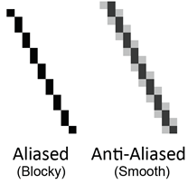
To make Pygame’s text use anti-aliasing, just pass True for the second parameter of the render() method. The pygame.draw.aaline() and pygame.draw.aalines() functions have the same parameters as pygame.draw.line() and pygame.draw.lines(), except they will draw anti-aliased (smooth) lines instead of aliased (blocky) lines.
Playing sounds that are stored in sound files is even simpler than displaying images from image files. First, you must create a pygame.mixer.Sound object (which we will call Sound objects for short) by calling the pygame.mixer.Sound() constructor function. It takes one string parameter, which is the filename of the sound file. Pygame can load WAV, MP3, or OGG files. The difference between these audio file formats is explained at http://invpy.com/formats.
To play this sound, call the Sound object’s play() method. If you want to immediately stop the Sound object from playing call the stop() method. The stop() method has no arguments. Here is some sample code:
soundObj = pygame.mixer.Sound('beeps.wav')
soundObj.play()
import time
time.sleep(1) # wait and let the sound play for 1 second
soundObj.stop()
You can download the beeps.wav file from http://invpy.com/beeps.wav.
The program execution continues immediately after play() is called; it does not wait for the sound to finish playing before moving on to the next line of code.
The Sound objects are good for sound effects to play when the player takes damage, slashes a sword, or collects a coin. But your games might also be better if they had background music playing regardless of what was going on in the game. Pygame can only load one music file to play in the background at a time. To load a background music file, call the pygame.mixer.music.load() function and pass it a string argument of the sound file to load. This file can be WAV, MP3, or MIDI format.
To begin playing the loaded sound file as the background music, call the pygame.mixer.music.play(-1, 0.0) function. The -1 argument makes the background music forever loop when it reaches the end of the sound file. If you set it to an integer 0 or larger, then the music will only loop that number of times instead of looping forever. The 0.0 means to start playing the sound file from the beginning. If you pass a larger integer or float, the music will begin playing that many seconds into the sound file. For example, if you pass 13.5 for the second parameter, the sound file with begin playing at the point 13.5 seconds in from the beginning.
To stop playing the background music immediately, call the pygame.mixer.music.stop() function. This function has no arguments.
Here is some example code of the sound methods and functions:
# Loading and playing a sound effect:
soundObj = pygame.mixer.Sound('beepingsound.wav')
soundObj.play()
# Loading and playing background music:
pygame.mixer.music.load('backgroundmusic.mp3')
pygame.mixer.music.play(-1, 0.0)
# ...some more of your code goes here...
pygame.mixer.music.stop()
This covers the basics of making graphical games with the Pygame framework. Of course, just reading about these functions probably isn’t enough to help you learn how to make games using these functions. The rest of the chapters in this book each focus on the source code for a small, complete game. This will give you an idea of what complete game programs “look like”, so you can then get some ideas for how to code your own game programs.
Unlike the “Invent Your Own Computer Games with Python” book, this book assumes that you know the basics of Python programming. If you have trouble remembering how variables, functions, loops, if-else statements, and conditions work, you can probably figure it out just by seeing what’s in the code and how the program behaves. But if you are still stuck, you can read the “Invent with Python” book (it’s for people who are completely new to programming) for free online at http://inventwithpython.com.
{kind=link}